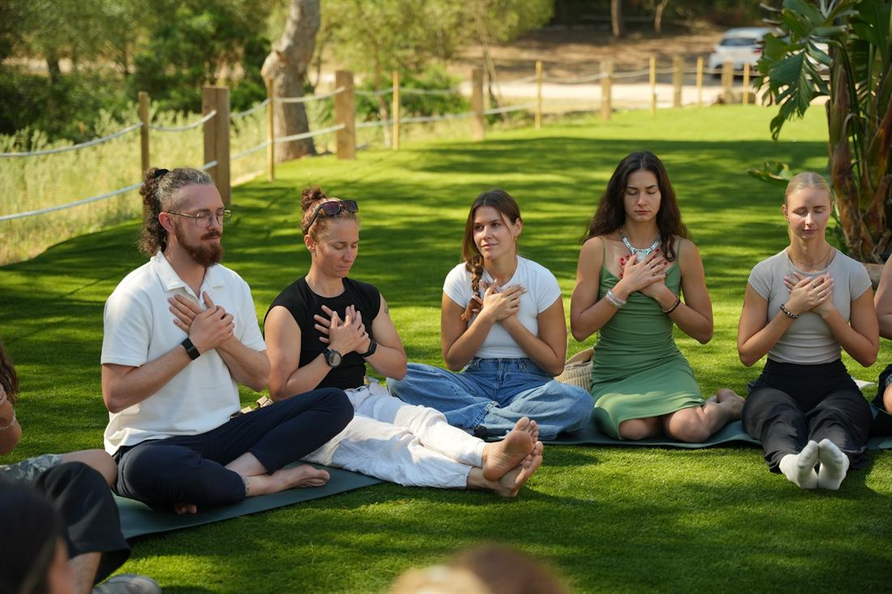

Eine Session von innen.
Du legst dich hin, du atmest, ich begleite dich — dein Körper macht den Rest.
Kennenlernen
Von der Tür bis zur Woche danach.
-
Vorher
Kennenlern-Call
30 Minuten, kostenlos. Wir schauen, was los ist und ob wir zusammenpassen.
-
Die ersten 15 Minuten
Ankommen
Wir klären, wo Berührung für dich okay ist und wie du jederzeit stoppen kannst.
-
Rund 60 Minuten
Atem, Druckpunkte, meine Stimme
Du liegst. Ich arbeite an den Punkten, an denen dein Körper Spannung parkt.
-
Die letzten 15 Minuten
Landen
Was hat sich verändert — im Körper, nicht im Kopf?
-
Die Tage danach
Nachklingen
Vieles bewegt sich erst nach der Session. Wenn es passt, sprechen wir darüber, wie es weitergeht.
„Vor der Session mit Franz konnte ich mir kaum vorstellen, wie so etwas (online) abläuft […]. Die Antwort: Ja, das geht!“
Passt das zu dir?
Das ist was für dich, wenn
- du dich schon lange verstehst und trotzdem nichts anders wird
- du endlich fühlen willst, statt noch mehr zu wissen
- du bereit bist, dich 90 Minuten führen zu lassen
Das ist nichts für dich, wenn
- du eine Diagnose oder Behandlung suchst
- du gerade in einer akuten Krise steckst — dann zuerst ärztliche oder therapeutische Hilfe
- du eine schnelle Lösung ohne dein Zutun erwartest

Wenn es passt, geht es weiter.
Nach deiner Session sprechen wir darüber, ob und wie.

Einzelbegleitung
Mehrere Monate an deiner Seite. Sessions, Integration und alles dazwischen.

Retreat
Ein paar Tage in der Gruppe. Offen für alle, die schon eine Session mit mir hatten.
„Dadurch, dass ich mich vom ersten Call an komplett verstanden und zu 111% gesehen gefühlt habe, konnte ich beim 1:1 mit dir endlich loslassen.“
„Mein erstes Wort nach unserer 1:1-Session war ‚Verrückt!‘“
Das wollen fast alle wissen.
Muss ich mich ausziehen?
Nein. Bequeme Kleidung reicht. Ich arbeite über der Kleidung, und wir klären vorher, welche Körperbereiche für dich okay sind.
Was, wenn nichts kommt?
Dann kommt nichts, und auch das ist eine Information. Dein System entscheidet über das Tempo, nicht dein Ehrgeiz.
Wie sage ich ab oder verschiebe?
Bis 48 Stunden (zwei Werktage) vorher kostenlos, bei Terminen vor Ort bitte eine Woche vorher. Alles Weitere steht in den AGB.
Ersetzt das eine Psychotherapie?
Nein. Neo Emotional Release ist Prozess- und Persönlichkeitsarbeit, kein Heilverfahren. Bei psychischen Erkrankungen und in akuten Krisen gehört ärztliche oder psychotherapeutische Hilfe an die erste Stelle.
Sofort erreichbar: Notruf 112 · Telefonseelsorge 0800 111 0 111 · Krisendienst Bayern 0800 655 3000
Noch nicht so weit?
Hör und probier erst mal kostenlos →Erst reden, dann entscheiden.
30 Minuten, kostenlos und unverbindlich.
Kennenlernen